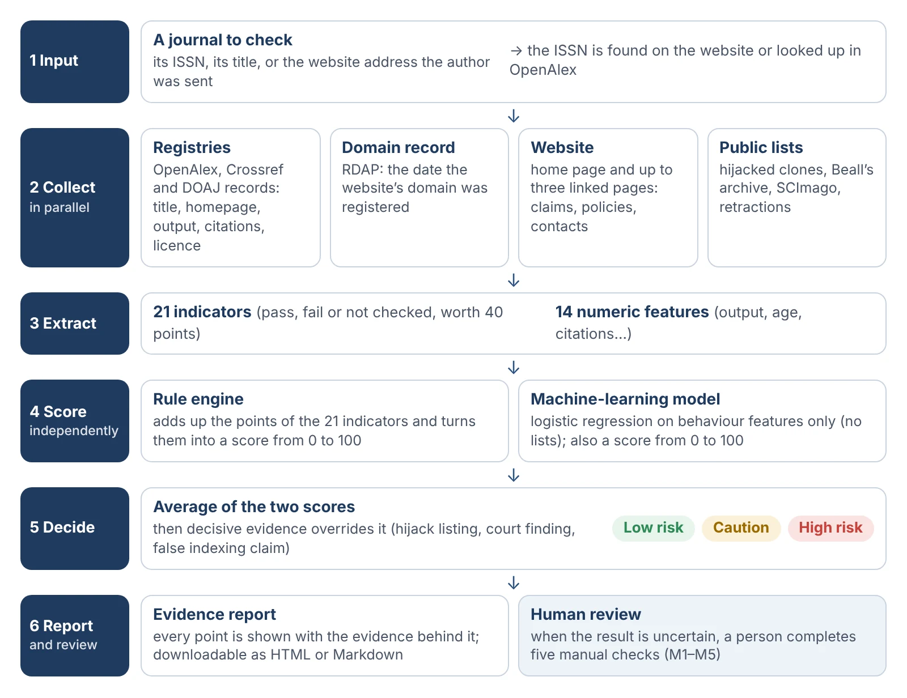
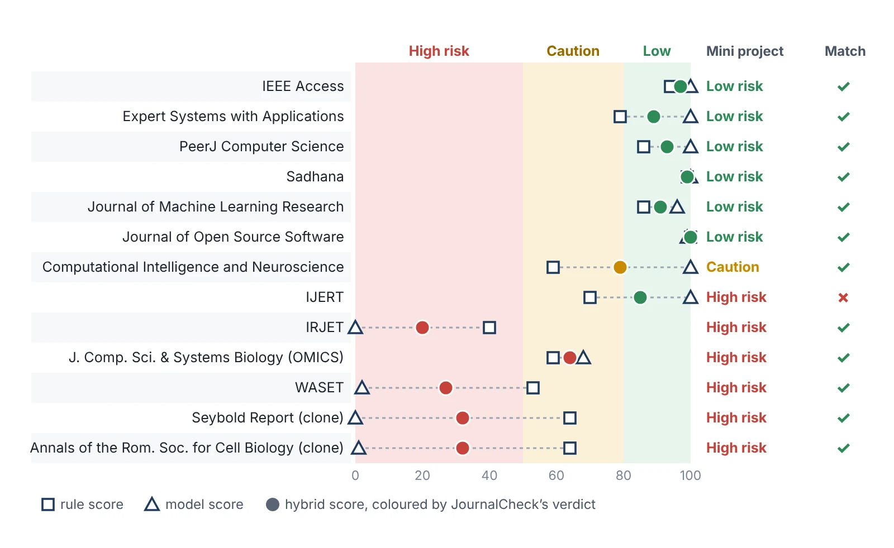
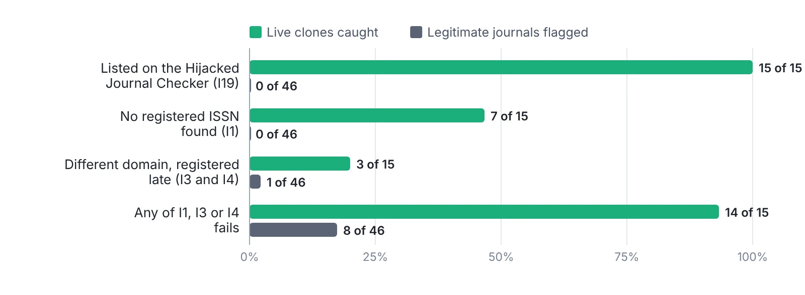
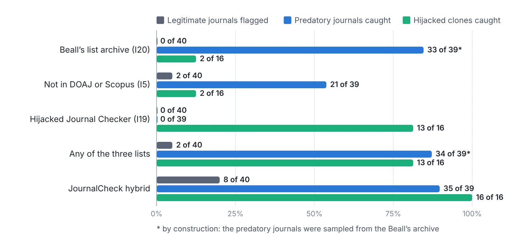
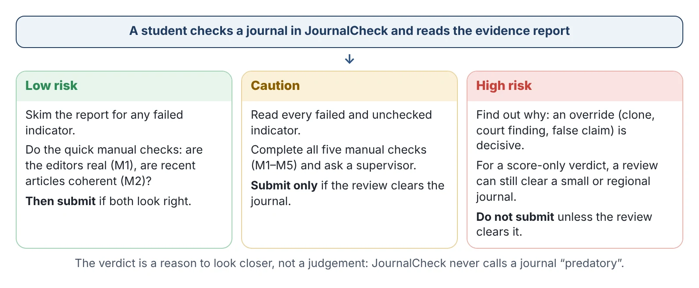

B.Tech major project · Woxsen University · 2026
Check a journal before you send it your paper.
JournalCheck tests a journal against 21 indicators drawn from OpenAlex, Crossref, DOAJ, domain records, the journal's own website and public lists. A rule engine and a machine-learning model score the same evidence, and every verdict shows the evidence behind it.
Check a journal
Your browser asks OpenAlex, Crossref and DOAJ directly and applies the framework's registry rules. That covers up to 9 of the 21 indicators. The checks on the website's wording, the public lists and the model need the full tool (run it on your computer).
The dataset
108 journals labelled from independent sources: legitimate journals sampled from OpenAlex core sources, DOAJ and Indian Scopus titles; predatory journals from the Beall's list archive; hijacked clones from the Retraction Watch Hijacked Journal Checker; and the 13 journals checked by hand in the mini project, kept aside as an external test. Select a journal to see its evidence report.
| ID | Journal | ISSN | Class | Rules | Model | Trust | Verdict |
|---|
Model scores of the 95 training journals are out-of-fold: each was scored by a model that had not seen it. The 13 external journals were scored by the final model. Labels come from public sources and are not a finding that any journal is predatory.
How it works
Six layers turn a journal into a verdict. The collectors gather evidence; the indicators turn it into pass, fail or "not checked"; two scorers judge the same evidence independently; decision rules and a person have the last word.

Rule score
Each indicator earns its points on a pass, nothing on a fail and half when it cannot be checked. Points earned out of 40, as a percentage.
Model score
A logistic-regression model trained on the labelled journals estimates the chance of high risk from 17 indicators and 14 numbers. Model score = 100 − that chance.
Trust score
The average of the two. 80 or more: Low risk. 50–79: Caution. Below 50: High risk.
Overrides
Decisive evidence replaces the band: a listed clone (K1), a court finding (K2) or a false indexing claim (K3) means High risk. An integrity alert caps the verdict at Caution.
Human review
A person checks any Caution, any override, a 30-point disagreement between the scorers, evidence coverage below 60% or a possible clone.
Evidence report
Every verdict comes with the evidence for each indicator, the model's main factors and five manual checks (M1–M5) for the reviewer.
The 21 indicators
The five checks only a person can do
Results
Ten repeats of five-fold cross-validation on the 95 training journals, then an external test on the 13 mini-project journals. "Flagged" means any verdict other than Low risk.
| Set-up | Precision | Recall | F1 | ROC-AUC | Legitimate flagged | High risk missed |
|---|




Run the full tool
The full check reads the journal's website, the public lists and the trained model, and opens in your browser as a small web app. It needs Python 3.10 or newer.
git clone https://github.com/journalcheck/journalcheck
cd journalcheck
python3 -m venv .venv && source .venv/bin/activate
pip install -r requirements.txt
python scripts/build_lists.py # download the public lists
streamlit run app.py # opens http://localhost:8501On Windows use .venv\Scripts\activate. On a Mac you can double-click run_journalcheck.command instead.
Reproduce the evaluation
python scripts/build_dataset.py # labelled sample (seed 42)
python scripts/add_india.py # 10 Indian Scopus journals
python scripts/collect.py # evidence + features.csv
python scripts/evaluate.py # metrics, models, figures
python scripts/build_site.py # this website's dataThe evaluation needs only data/features.csv, which is in the repository, so evaluate.py reproduces every number above without going online.
Responsible use
JournalCheck is a triage aid. A High-risk verdict means a person should look at the journal before submitting; it is not a finding that a journal is predatory. Country and language are not used as features, but the error analysis found that Indian legitimate journals were flagged more often (5 of 11, against 3 of 29 others), so a Caution or High-risk verdict on a regional journal deserves a careful human look.
About
Built by Rhea Ishani Chemudupati and Himanshu Maurya for the course Research Writing, Intellectual Property and Scholarly Publishing, School of Technology, Woxsen University, under the guidance of Dr. M. Upendra Kumar. The project turns the 20-criterion checklist of the team's mini project into an automated, explainable framework.
Code: MIT licence. Dataset labels and scores: CC BY 4.0. Public lists are not redistributed; build_lists.py downloads them from their sources.